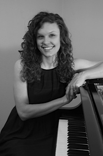

Drink some water and sit down at the piano.
Professional Bio
Teaching Philosophy
Studio Policy
For Students
For Parents
Registration
Contact
A classical pianist, teacher, and accompanist, Erin VanWinkle graduated in the spring of 2014 from the University of Central Florida with a Bachelor of Music in Piano Performance. During her time at UCF, Erin gave several public performances, including her junior and senior recitals. She was a finalist in the school’s 2011 concerto competition, playing Poulenc’s Concerto for Two Pianos in d minor with her chamber music partner, Jessica Welsh. Following graduation, Erin has continued her piano studies with renowned performer and pedagogue, Rebecca Penneys.
After beginning her piano studies at the age of seven, Erin participated in several events with the Florida Federation of Music Clubs and National Guild of Music. In addition to operating a private studio from her home, Erin is on the piano faculty at St. Andrew’s Conservatory and serves on the FFMC Lake-Central district festival committee as the theory exam proctor.
Erin’s principal teachers have been Laurent Boukobza and Rebecca Penneys, and she has had the privilege playing in master classes with Antoni Pompa-Baldi, Nelson Delle-Vigne Fabbri, Rebecca Penneys, and Grigorios Zamparas.